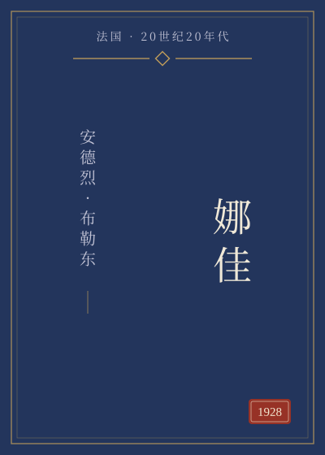
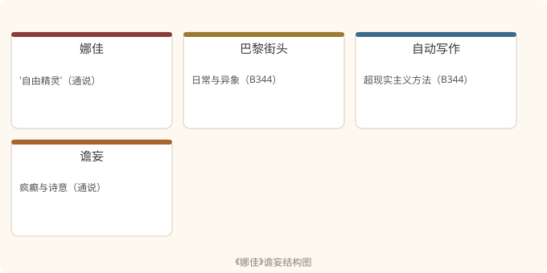

娜佳
一、基本信息
| 作者 | 安德烈·布勒东 |
|---|---|
| 成书/出版 | 1928年（Britannica B344：Nadja (1928)） Andre Breton — Encyclopaedia Britannica（百科全书） |
| 国别/地区 | 法国 |
| 时代 | 现当代 · 20世纪20年代 |
| 体裁 | 小说（自传性散文） |
| 语言 | 法语 |

《娜佳》谵妄结构图（主题·结构图）
二、创作背景
Britannica（B344）：Nadja——'merged everyday occurrences with psychological aberrations'（把日常事件与心理异象熔为一体）。
Britannica（B344）：布勒东为超现实主义'chief promoter and one of the founders'；1924宣言定义'pure psychic automatism'。
题材（通说待核）：'我'与神秘女子娜佳在巴黎街头相遇——疯癫与诗意的边界。
三、内容脉络
巴黎街头的日常相遇与'心理异象'的交织（B344：everyday occurrences...psychological aberrations）。
娜佳其人（原型说通说待核）：谵妄中的'自由精灵'（通说待核）。
四、主要人物表
| 人物 | 身份 | 说明 |
|---|---|---|
| '我' | 叙述者 | （B344 自传性语境） |
| 娜佳 | 神秘女子 | （B344 书名人物） |
五、主题与艺术特点
- 梦与现实的边界消除（B344：eliminate the distinction between dream and reality）。
- 自动写作的叙事化（B344：automatic writing）。
- 谵妄与诗意（B344：psychological aberrations 语境）。
六、影响与评论
- Britannica：超现实主义运动的核心文本之一（B344 定位）。
Andre Breton — Encyclopaedia Britannica（百科全书） - Britannica：'merged everyday occurrences with psychological aberrations'（B344）。
Andre Breton — Encyclopaedia Britannica（百科全书）
七、阅读建议
难点
- 超现实主义术语（自动写作/客体）。
- 1920年代巴黎的先锋派圈层。
- 《娜佳》中译名（《娜佳》/《娜嘉》）——通说待核。
- 法文原版。
布勒东首选；配合《超现实主义宣言》阅读。
八、待核实
- 娜佳原型（Jacquina Roque说/其他）待核。
- 1928年初版与1963年修订版差异待核。
- 人物照片插入的'档案性'细节待核。